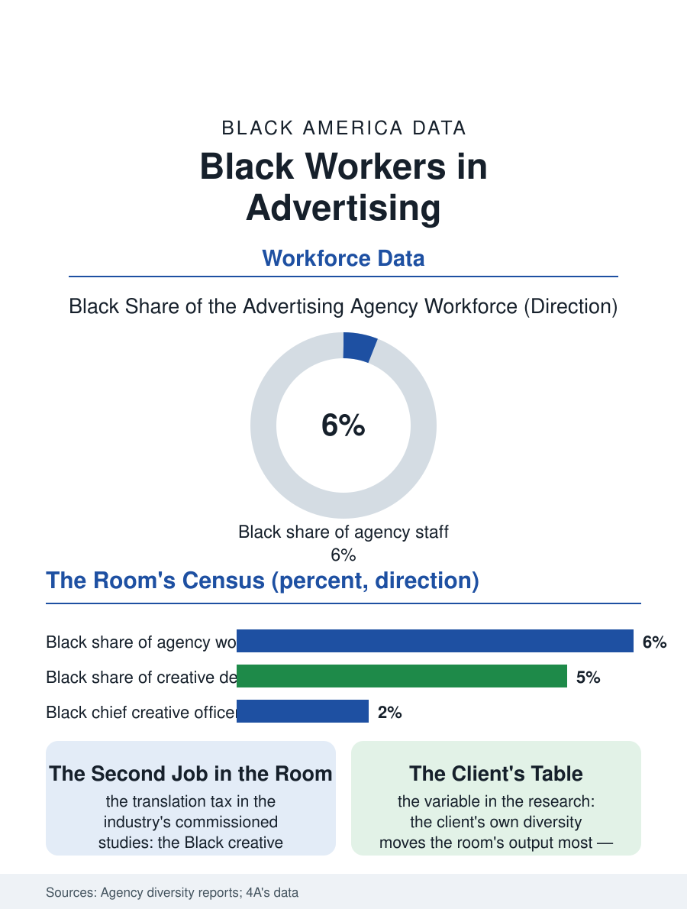

Black Employment
The Mirror's Makers: Black Workers in Advertising
Six percent of the mirror's makers, paying the translation tax in the room where the culture's commercial image is judged. The advertising file.

The advertising industry's workforce, the agency file's employees rather than its owners, posts the creative economy's most discussed diversity numbers: Black professionals at roughly six percent of the agency workforce, thinning through the creative leadership to the chief creative officer tier's handful, in the industry that manufactures the culture's commercial mirror. This article reads the advertising workforce file.
The Agency Census
The industry's own reporting, the holding companies' disclosures and the agencies' published censuses of the current era, gives the file its data: the Black share of the agency workforce runs in the mid single digits, the creative departments thinner than the account and media departments', the strategy and data roles fuller in the pattern of the digital transition, and the leadership tiers, the executive creative directors and the agency presidents, recording the funnel of the other professional files in miniature. The industry's history inside the file is the Mad Men record the culture knows, the general agencies' exclusion era unbroken into the civil rights decades, broken first by the Black agencies of the business file hiring the talent the general market wasted, so that the workforce's senior Black generation was trained substantially in the Black-owned tier and recruited upward in the integration era, a flow the agencies' oral histories preserve. The freelance and portfolio economy has since rebuilt the workforce's structure: the staff creative's decline and the per-project roster's rise distribute the work through the networks again, with the portfolio platforms giving the Black creative a showroom the old book-and-lunch system rationed, while the staff jobs' security concentrates in the holding companies' hubs.
The Room Where the Work Is Judged
The workforce's internal file is the room: the creative review where the work lives or dies runs on the cultural references of the people in it, and the Black creative's documented experience, in the industry's own commissioned studies and the trade press's record, is the translation tax, the explaining of the culture to the room as an unpaid second job, alternating with the ghetto assignment, the urban brief routed to the Black team regardless of its members' ambitions, the advertising version of the journalism file's beat trap. The pay file follows the assignment file: the salary transparency data the current generation publishes show the Black agency professional's compensation trailing at the same title in the pattern of the professional files, with the award economy, the industry's parallel currency, distributing its credits through the room's politics as well. The industry's corrective era, the pledges and the published censuses and the chief diversity officers of the holding companies, posts its results in the same censuses' slow movements, while the client side's diversity, the brand managers who buy the work, emerges in the research as the variable that moves the room's output most, the client's table being the one the agency's table is set to please.
The Mirror's Makers
The advertising workforce file closes on the product's cultural weight, because this workforce manufactures the images in which the country, and the Black audience within it, sees itself reflected commercially a thousand times a day, and the workforce's composition is therefore a cultural policy fact as much as a labor one, as the Kerner-era media argument of the journalism file extends naturally to the commercial mirror. The misfires that periodically cost the brands their apologies are, in the workforce's own analysis, composition failures with dates on them, the room where nobody could read the image being the room the census describes. The forward file is the creator economy's absorption of the industry's junior tier, the young Black creative building the audience directly on the platforms and selling it back to the brands at the influencer's rates, bypassing the agency ladder whose diversity the censuses mourn, an exit that pressures the industry from the talent side as the platforms pressured it from the media side. The industry's reports count the workforce's Black share at six percent and describe the trend, in their own careful language, as insufficient. The file's last entry is the mirror's: the images improved exactly as fast as the room did, no faster, and the census of the room is therefore the culture's own leading indicator, published by the industry, about itself, in numbers it has learned to read aloud.
More in Black Employment
The Black Unemployment Rate: The Two-to-One Pattern
Black unemployment runs at roughly twice the White rate — 5.5 percent against 3.3 percent in annual averages — a ratio stable across five decades of federal data. How it is measured and why it persists.
Black Median Weekly Earnings: The 80-Cent Ratio
Black full-time workers earn a median of about $900 a week — roughly 80 cents for every dollar White workers earn. The BLS earnings data by group, gender, and occupation.
Black Labor Force Participation: Working at National Rates
Black labor force participation runs at roughly the national rate — and Black women participate at higher rates than White women. The BLS participation data.
Source: Advertising holding company workforce disclosures; American Association of Advertising Agencies diversity data; industry salary transparency studies.